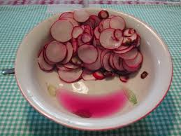
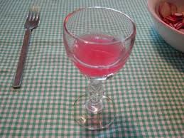
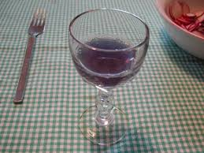

Primavera? Ma quale primavera!
Se continua questo schifo di tempo che permane da mesi -lo voglio proprio documentare con questo aggettivo- ci siamo già mangiati la più bella stagione dell'anno e addio alle gioie del dolce risveglio con i fiorellini.
Ma tant'è: "cul, tempo e siori i fa quel che i vol lori" sentenzia riguardo il tempo un irriverente adagio dei miei luoghi, e così ce lo teniamo come viene. (Serve la traduzione del proverbietto? Forse no).
Io sono un appassionato di tutte le verdure, e così quando li trovo mi preparo volentieri anche uno squisito piattino di ravanelli.
Me li preparo come quelli che vedete in foto; tagliati a fettine molto sottili, con la giusta quantità di sale, mescolati e lasciati riposare, per far sì che la pressione osmotica faccia uscire una certa quantità di liquido che trasporta la parte più piccante e leggermente sgradevole del succo.
Non si creda adesso che io non ami il piccante: i miei gusti si avvicinano, e probabilmente superano, quelli di un messicano di origini calabresi... ma nonostante ciò i ravanelli secondo me vanno rigorosamente trattati come detto sopra.
La rafanina (4-isotiocianato-1-(metilsulfinil)but-1-ene) che rimane comunque è proprio nella giusta quantità per fare la differenza tra un piatto qualsiasi di ramolaccio e un piatto prelibato, fresco e morbido come seta.

Guardando questo bel sangue di ravanello color fucsia, mi è venuta voglia di provarlo come indicatore, anche se sapevo già che sarei andato sul sicuro; insomma, come usare il cavolo rosso, la violetta, e tutti quegli altri antocianici liquidi colorati che la natura ci offre e dei quali tutti abbiamo letto o sperimentato... e che non ho voglia di ripetere qui, nè di mettere formule.
Qualcuno ha fatto il test del ravanello? Non credo; e allora oggi via con un po' di scenografia poco chimica e tanto culinaria: il succo al naturale (sopra), quello con qualche goccia di acido citrico e quello con l'aggiunta di altrettanta ammoniaca diluita.


Nelle foto i colori risultanti, che son poi proprio quelli che ci aspettavamo, dal rosso al viola bluastro.
E dopo l'esperimentino (che metto qui come auspicio di primaVERA!)... un bel giro di olio delle colline moreniche, una grattatina di pepe, una rosettina di pane da poco sfornato e... buon appetito!
6 commenti